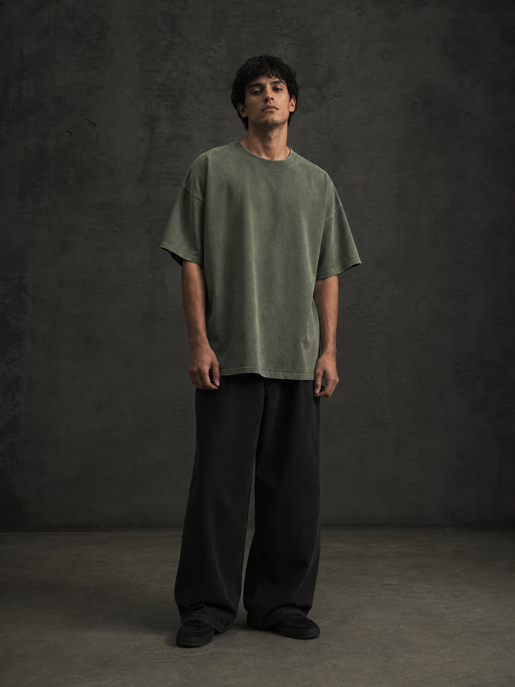

Form first.
Every piece starts with proportion: dropped shoulders, a generous body and an easy drape.
About VOIDWEAR / Est. 2024
VOIDWEAR makes relaxed, heavyweight essentials for people who choose presence over performance.

Quietly built. Clearly felt.
The point of view
That means an intentional shape, weight you can feel, and a finish that gets better the more it becomes yours. No seasonal noise. No unnecessary detail. Just the pieces you reach for, on repeat.
What matters
Every piece starts with proportion: dropped shoulders, a generous body and an easy drape.
We use 240gsm combed cotton for a finish that feels substantial from the first wear.
Built to be washed, lived in and worn again—not saved for a moment that may never arrive.

For the in-between
Our first drop is made to move through the whole day with you—and leave room for wherever it takes you.
Shop the collection ↗